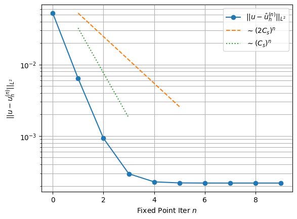
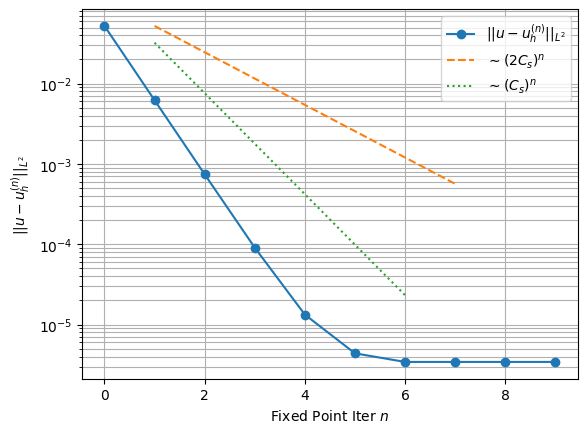
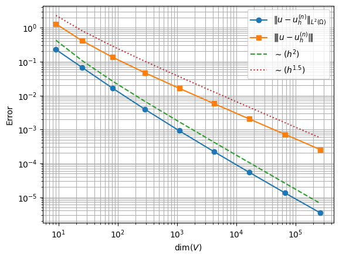
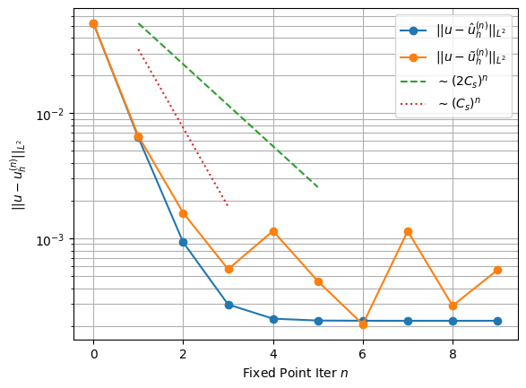
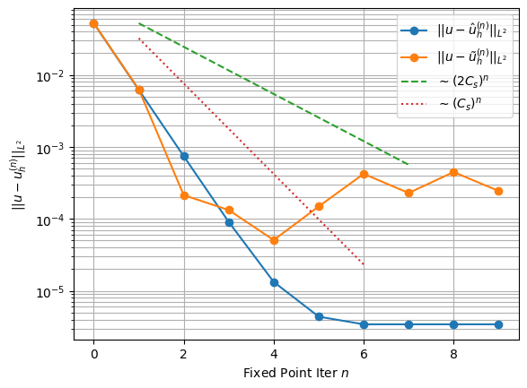
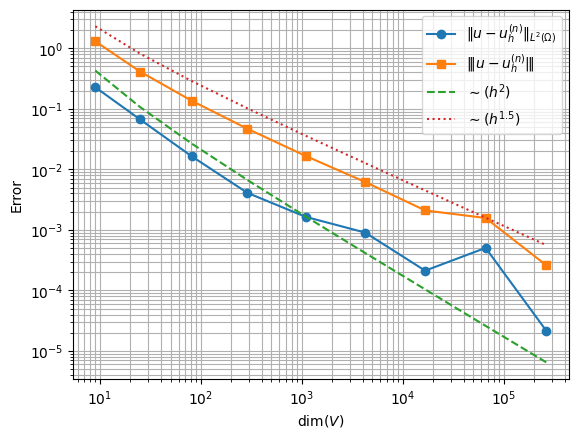
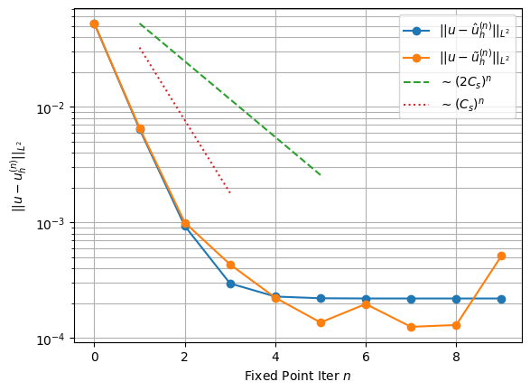
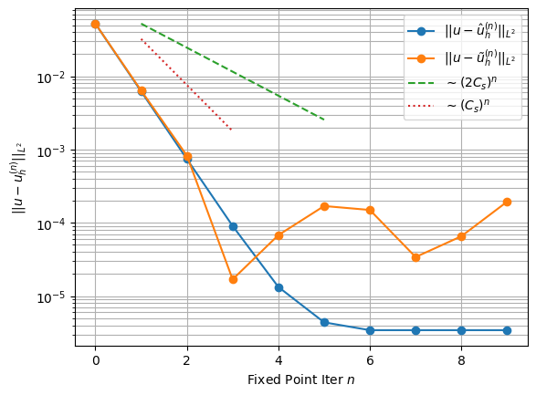

Section 1.7 Numerical Experiments
Subsection 1.7.1 Introduction
We validate the theoretical convergence rates established in Section 1.5 and Section 1.6 through a series of numerical experiments, considering both deterministic (exact) and Monte Carlo evaluation of the scattering operator. All experiments use the method of manufactured solutions on the unit square, with parameters fixed as follows:
-
\(\displaystyle \Omega = [0,1]^2\)
-
\(\displaystyle \sigma_A = 4.5, \sigma_T = 1, \sigma = \sigma_A + \sigma_T = 5.5\)
-
\(\displaystyle \mathbf{b} = (1, \sqrt{2})^T\)
-
\(\displaystyle \delta_K = h_K\)
The source \(q\) is chosen so that the exact solution is
\begin{equation}
u(x_1,x_2) = \sin(\pi x_1)\sin(\pi x_2)\tag{1.7.1}
\end{equation}
and the inflow data is \(g = u|_{\Gamma_-}\text{.}\) We consider only the unit kernel \(\mathcal{K}(x,y) = 1\text{,}\) for which the scattering integral reduces to \(\int_\Omega u(y)\,\mathrm{d}y\) - a scalar independent of \(x\text{.}\) Although this may seem a substantial simplification, we have found empirically that Gaussian kernels exhibit the exact same convergence characteristics (as to be expected, as this only impacts the constants of the convergence results).
Thus, we have
\begin{align}
C_s &= \linf{\sigma_T}\ldouble{\mathcal{K}}\frac{1}{\mu}\left(
1 + (\mu\delta_\text{max})^{1/2}
\right)\tag{1.7.2}\\
&= \frac{1+\sqrt{5.5h}}{5.5}.\tag{1.7.3}
\end{align}
Therefore, we have \(C_s\leq \frac{1}{2}\) whenever \(h\leq \frac{49}{88} \approx 0.557\text{.}\) Hence, for a uniform square mesh on \(\Omega = [0,1]^2\text{,}\) Theorem 1.5.14 and Theorem 1.6.5 apply whenever the grid size is greater than \(3\times3\text{.}\) Finally, we note that all implementations use \(P^1\) elements, setting \(k = 1\) in the aforementioned theorems.
Subsection 1.7.2 Deterministic Case
We first validate the source iteration convergence result of Theorem 1.5.12. In Figure 1.7.1, we see the iterative scheme (1.4.9) on a \(64\times64\) mesh and a \(512\times512\) mesh, each showing an initial convergence rate greater than \((2C_s)^n\) - faster even than \((C_s)^n\text{,}\) hinting at the slack in our estimates.
This continues until the discretisation error \(\enorm{u-u_h}\) starts to dominate. Indeed, by plotting the full error \(\ltwo{u-u_h^{(n)}}\text{,}\) the early stages demonstrate iteration error convergence with negligible discretisation error, while convergence stagnates once iteration error falls below discretisation error. We are effectively viewing the triangle inequality
\begin{equation}
\ltwo{u-u_h^{(n)}} \leq \ltwo{u-u_h} + \ltwo{u_h - u_h^{(n)}}
\leq \frac{1}{\mu^{1/2}}\enorm{u-u_h} + \ltwo{u_h - u_h^{(n)}}\tag{1.7.4}
\end{equation}
The stagnation in Figure 1.7.1 occurs later on the finer mesh, consistent with its smaller discretisation error, and the error floor is lower by a factor of approximately \((64/512)^{k+1/2} = (1/8)^{3/2} \approx 0.044\text{,}\) in agreement with the rate in Theorem 1.5.14.


Figure 1.7.2 validates Corollary 1.5.10, which predicts that the discretisation error decays at rate \(\mathcal{O}(h^{k+1/2}) = \mathcal{O}(h^{3/2})\) for \(P^1\) elements in the SUPG norm. For each value of \(h \in \{1/2, 1/4, 1/8, \ldots, 1/512\}\text{,}\) we run \(n = 10\) source iterations initialised at \(u_h^{(0)} = 0\) and record the error \(\enorm{u - u_h^{(10)}}\text{.}\) The choice \(n = 10\) is justified by Figure 1.7.1: for all mesh sizes considered, the iteration error \(\enorm{u_h - u_h^{(10)}}\) has already fallen well below the discretisation error \(\enorm{u - u_h}\) by the tenth iteration, so the plotted quantity is an accurate proxy for \(\enorm{u - u_h}\text{.}\) The observed slope is in exact agreement with the theoretical rate \(h^{3/2}\text{,}\) confirming the sharpness of the interpolation-based estimate in Corollary 1.5.10.

Subsection 1.7.3 Stochastic Case
We now introduce Monte Carlo estimation of the scattering operator and examine its effect on both the iteration convergence and the mesh refinement study.
Figure 1.7.3 overlays the deterministic and stochastic (\(M = 10000\)) iteration error curves for the \(64\times64\) and \(512\times512\) meshes. The MC estimator introduces a noise floor at approximately \(10^{-3}\text{:}\) once the iteration error falls to this level, further iterations no longer reduce the total error, and the curve stagnates earlier than in the deterministic case. This is consistent with the Strang estimate of Theorem 1.6.5, in which the MC consistency error contributes a term of order \(\mathcal{O}(M^{-1/2})\) independently of \(n\text{.}\) The stagnation level is comparable across both meshes, confirming that the MC error dominates once the discretisation error falls below \(\mathcal{O}(M^{-1/2})\text{.}\)


Figure 1.7.4 repeats the mesh refinement study of Figure 1.7.2 with MC estimation of the scattering operator (\(M = 10000\)). For coarse meshes, where the discretisation error exceeds the MC noise floor, the expected \(h^{3/2}\) rate is recovered. As \(h\) decreases and \(\enorm{u - u_h}\) approaches \(\mathcal{O}(M^{-1/2})\text{,}\) the MC consistency error begins to dominate and the convergence curve flattens and becomes irregular. This saturation is precisely what the Strang estimate predicts: once the best-approximation term \((1 + C_a)\inf_{w_h}\|u - w_h\|_*\) is smaller than the MC term, further mesh refinement yields no improvement without a corresponding increase in \(M\text{.}\) The persistent downward trend visible even in the irregular regime reflects the decreasing discretisation error floor, but finer meshes are increasingly dominated by the \(\mathcal{O}(M^{-1/2})\) consistency error.

Finally, we investigate the effect of increasing Monte Carlo Samples. Figure 1.7.5 shows the iteration convergence plot for the case of \(M=40000\) samples. As this is a 4-fold increase, we expect to see a factor of \(\frac{1}{\sqrt{4}} = \frac{1}{2}\) reduction in the associated Monte Carlo error. In comparison with Figure 1.7.3, we have tentative results motivating this is the case. However, this is difficult to verify as the spread of the Monte Carlo error itself ranges an order of magnitude. We leave to future work the process of averaging over multiple independent realisations to estimate the expected noise floor - which would relieve us from relying on a single sample path.

